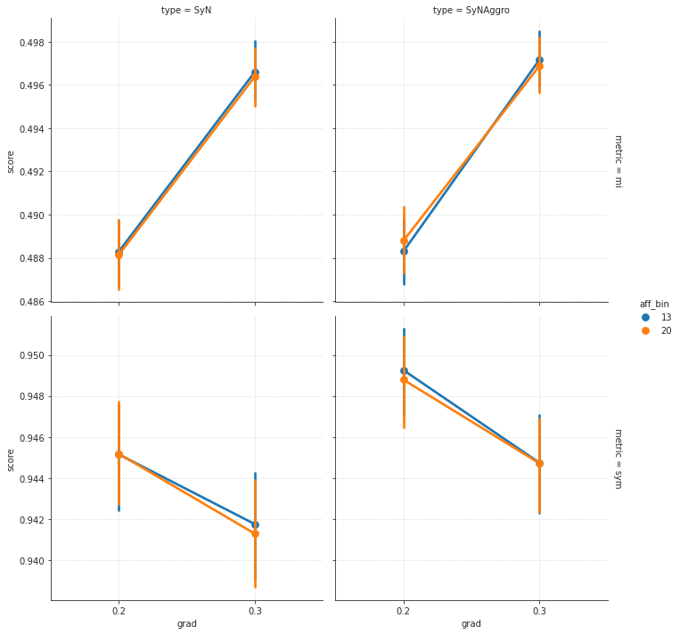
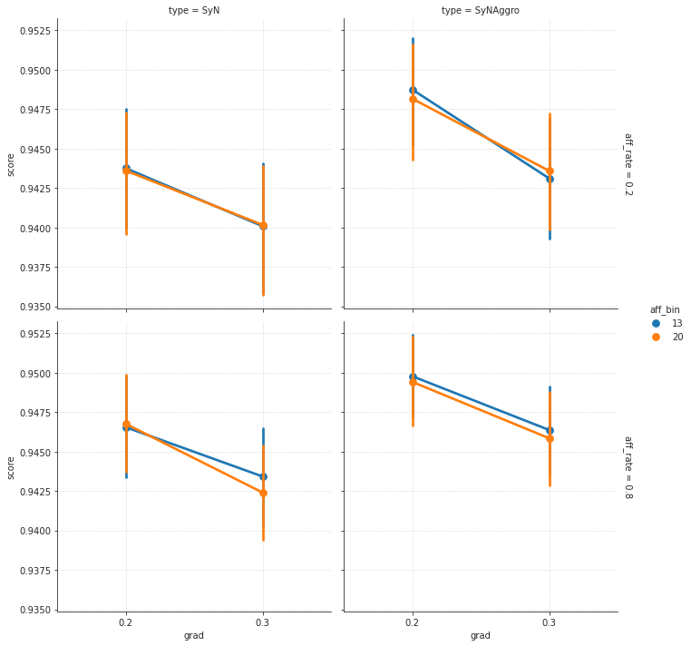
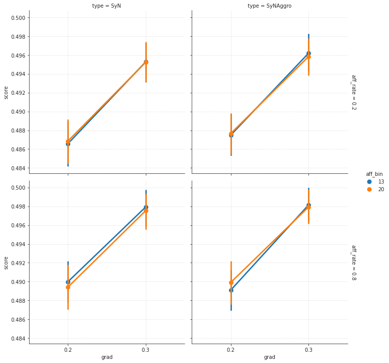
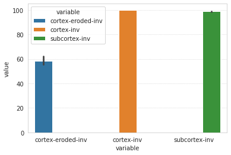

Sep kaba-th, 2021¶
Motivation: This has the most succesfull registration of Nissl to Yale N162 0.1 mm
# HIDE CODE
import os
import sys
import nibabel as nib
import networkx as nx
from time import time
from pprint import pprint
from copy import deepcopy as dc
from os.path import join as pjoin
from myterial import orange, blue_grey
from IPython.display import display, IFrame, HTML
from matplotlib.colors import rgb2hex, to_rgb
import matplotlib.pyplot as plt
import seaborn as sns
# set style & no interpolalation
import matplotlib
matplotlib.rcParams['image.interpolation'] = 'none'
sns.set_style('whitegrid')
# tmp & extras dir
git_dir = pjoin(os.environ['HOME'], 'Dropbox/git')
tmp_dir = pjoin(git_dir, 'jb-Ca-fMRI/tmp')
extras_dir = pjoin(git_dir, 'jb-Ca-fMRI/_extras')
lfr_dir = pjoin(os.environ['HOME'], 'Documents/workspaces/lfr/binary_overlapping')
# GitHub
sys.path.insert(0, pjoin(git_dir, '_Ca-fMRI'))
from register.atlas import Allen
from register.parcellation import Parcellation
from analysis.hierarchical import Hierarchical
from analysis.bootstrap import *
from analysis.svinet import *
from analysis.group import *
from analysis.lfr import *
from utils.render import *
from utils.plotting import *
from model.mouse import Mice
from model.configuration import Config
# warnings
import warnings
warnings.filterwarnings('ignore', category=DeprecationWarning)
%%time
mice = Mice(Config(768, 4, 100), load_parcel=True, load_allen=True, load_preproc=True)
[PROGRESS] 'config.json' saved at /home/hadi/Documents/Ca-fMRI/processed/norm-global_parcel-columnar_n-768*4
CPU times: user 4.83 s, sys: 1.14 s, total: 5.97 s
Wall time: 7.66 s
mice.parcel.fit_parcel(force_fit=True, cutoff=1)
[PROGRESS] fit columnar: initiated
Intel(R) oneAPI Data Analytics Library solvers for sklearn enabled: https://intelpython.github.io/daal4py/sklearn.html
Is cutoff = 1 good? if yes, proceed with below¶
from register.register import *
reg = Register(mice)
reg.register_anat(True)
registering anat sub-SLC10_ses-3: 100%|██████████| 30/30 [10:53<00:00, 21.78s/it]
kwargs = {
'types': ['SyN', 'ElasticSyN', 'SyNAggro'],
'grads': [0.2, 0.25, 0.3],
'syn_bins': [32, 16],
'aff_bins': [13, 20],
'aff_rates': [0.2, 0.5, 0.8],
'mi_q': 0.75,
'n_seeds': 10,
}
kwargs
{ 'types': ['SyN', 'ElasticSyN', 'SyNAggro'], 'grads': [0.2, 0.25, 0.3], 'syn_bins': [32, 16], 'aff_bins': [13, 20], 'aff_rates': [0.2, 0.5, 0.8], 'mi_q': 0.75, 'n_seeds': 10 }
%%time
reg.register_anat(save_results=True, **kwargs)
registering anat sub-SLC01_ses-1: 0%| | 0/30 [00:00<?, ?it/s]
sub-SLC01_ses-1, perf: seed 0 type ElasticSyN grad 0.3 syn_bin 32 aff_bin 13 aff_rate 0.8 metric sym score 0.972845
registering anat sub-SLC10_ses-3: 100%|██████████| 30/30 [3:36:31<00:00, 433.06s/it]
overal scores: 0.973 ± 0.000
CPU times: user 2d 6h 53min 15s, sys: 1h 16min 6s, total: 2d 8h 9min 22s
Wall time: 3h 37min 5s
mice.al.slices_l
(slice(None, 132, None), slice(None, 80, None), slice(0, 57, None))
mice.al.slices_r
(slice(None, 132, None), slice(None, 80, None), slice(57, 114, None))
x = mice.parcel.results['subcortex']
plt.imshow(x[mice.al.slices_l][45])
<matplotlib.image.AxesImage object at 0x7e8004246fd0>
plt.imshow(x[mice.al.slices_r][45])
<matplotlib.image.AxesImage object at 0x7e800421e910>
np.unique(x[mice.al.slices_r][40].ravel())
array([ 0, 56, 258, 342, 583, 589, 596, 672, 754, 814, 942, 961], dtype=uint32)
np.unique(x[mice.al.slices_l][40].ravel())
array([ 0, 56, 258, 342, 583, 589, 672, 754, 814, 942, 961], dtype=uint32)
x[mice.al.slices_r][40].astype(bool).sum()
808
x[mice.al.slices_l][40].astype(bool).sum()
800
mice.al.get(596)
{ 'acronym': 'NDB', 'graph_id': 1, 'graph_order': 618, 'id': 596, 'name': 'Diagonal band nucleus', 'structure_id_path': [997, 8, 567, 623, 803, 826, 904, 596], 'structure_set_ids': [ 112905828, 691663206, 687527945, 688152362, 12, 184527634, 167587189, 114512891 ], 'rgb_triplet': [150, 167, 211] }
plt.imshow(x[40])
<matplotlib.image.AxesImage object at 0x7e8004358d90>
962 + 14, 962 - 14
(976, 948)
import pathlib
df = []
for path in sorted(pathlib.Path(mice.cfg.tx_dir).rglob('*.df')):
_df = pd.read_pickle(str(path))
_df['key'] = path.parent.name
df.append(_df)
df = pd.concat(df)
df
| seed | type | grad | syn_bin | aff_bin | aff_rate | metric | score | key | |
|---|---|---|---|---|---|---|---|---|---|
| 0 | 0 | SyN | 0.2 | 32 | 13 | 0.2 | mi | 0.473468 | Symmetric_N162 |
| 1 | 0 | SyN | 0.2 | 32 | 13 | 0.2 | ovp_MOp | 1.000000 | Symmetric_N162 |
| 2 | 0 | SyN | 0.2 | 32 | 13 | 0.2 | sym_MOp | 0.985489 | Symmetric_N162 |
| 3 | 0 | SyN | 0.2 | 32 | 13 | 0.2 | ovp_MOs | 1.000000 | Symmetric_N162 |
| 4 | 0 | SyN | 0.2 | 32 | 13 | 0.2 | sym_MOs | 0.996136 | Symmetric_N162 |
| ... | ... | ... | ... | ... | ... | ... | ... | ... | ... |
| 2155 | 4 | SyNAggro | 0.3 | 32 | 20 | 0.8 | sym_STRd | 0.929283 | sub-SLC10_ses-3 |
| 2156 | 4 | SyNAggro | 0.3 | 32 | 20 | 0.8 | ovp_iso | 0.993765 | sub-SLC10_ses-3 |
| 2157 | 4 | SyNAggro | 0.3 | 32 | 20 | 0.8 | sym_iso | 0.883690 | sub-SLC10_ses-3 |
| 2158 | 4 | SyNAggro | 0.3 | 32 | 20 | 0.8 | sym | 0.896131 | sub-SLC10_ses-3 |
| 2159 | 4 | SyNAggro | 0.3 | 32 | 20 | 0.8 | ovp | 0.994637 | sub-SLC10_ses-3 |
66960 rows × 9 columns
mi = df.loc[df['metric'] == 'mi']
sym = df.loc[df['metric'] == 'sym']
fg = sns.catplot(
data=df.loc[df['metric'].isin(['sym', 'mi'])],
x='grad',
y='score',
col='type',
row='metric',
kind='point',
hue='aff_bin',
sharey='row',
margin_titles=True,
)
for ax in fg.axes.ravel():
ax.grid()

fg = sns.catplot(
data=df.loc[df['metric'].isin(['sym'])],
x='grad',
y='score',
col='type',
row='aff_rate',
kind='point',
hue='aff_bin',
sharey='all',
margin_titles=True,
)
for ax in fg.axes.ravel():
ax.grid()

fg = sns.catplot(
data=df.loc[df['metric'].isin(['mi'])],
x='grad',
y='score',
col='type',
row='aff_rate',
kind='point',
hue='aff_bin',
sharey='all',
margin_titles=True,
)
for ax in fg.axes.ravel():
ax.grid()

Masks¶
sorted(os.listdir(mice.cfg.masks_dir))
[ 'Symmetric_N162_space-CCF-3d_cortex-eroded-inv.nii.gz', 'Symmetric_N162_space-CCF-3d_cortex-inv.nii.gz', 'Symmetric_N162_space-CCF-3d_iso-inv.nii.gz', 'Symmetric_N162_space-CCF-3d_subcortex-inv.nii.gz', 'png', 'sub-SLC01_ses-1_space-CCF-3d_cortex-eroded-inv.nii.gz', 'sub-SLC01_ses-1_space-CCF-3d_cortex-inv.nii.gz', 'sub-SLC01_ses-1_space-CCF-3d_iso-inv.nii.gz', 'sub-SLC01_ses-1_space-CCF-3d_subcortex-inv.nii.gz', 'sub-SLC01_ses-2_space-CCF-3d_cortex-eroded-inv.nii.gz', 'sub-SLC01_ses-2_space-CCF-3d_cortex-inv.nii.gz', 'sub-SLC01_ses-2_space-CCF-3d_iso-inv.nii.gz', 'sub-SLC01_ses-2_space-CCF-3d_subcortex-inv.nii.gz', 'sub-SLC01_ses-3_space-CCF-3d_cortex-eroded-inv.nii.gz', 'sub-SLC01_ses-3_space-CCF-3d_cortex-inv.nii.gz', 'sub-SLC01_ses-3_space-CCF-3d_iso-inv.nii.gz', 'sub-SLC01_ses-3_space-CCF-3d_subcortex-inv.nii.gz', 'sub-SLC02_ses-1_space-CCF-3d_cortex-eroded-inv.nii.gz', 'sub-SLC02_ses-1_space-CCF-3d_cortex-inv.nii.gz', 'sub-SLC02_ses-1_space-CCF-3d_iso-inv.nii.gz', 'sub-SLC02_ses-1_space-CCF-3d_subcortex-inv.nii.gz', 'sub-SLC02_ses-2_space-CCF-3d_cortex-eroded-inv.nii.gz', 'sub-SLC02_ses-2_space-CCF-3d_cortex-inv.nii.gz', 'sub-SLC02_ses-2_space-CCF-3d_iso-inv.nii.gz', 'sub-SLC02_ses-2_space-CCF-3d_subcortex-inv.nii.gz', 'sub-SLC02_ses-3_space-CCF-3d_cortex-eroded-inv.nii.gz', 'sub-SLC02_ses-3_space-CCF-3d_cortex-inv.nii.gz', 'sub-SLC02_ses-3_space-CCF-3d_iso-inv.nii.gz', 'sub-SLC02_ses-3_space-CCF-3d_subcortex-inv.nii.gz', 'sub-SLC03_ses-1_space-CCF-3d_cortex-eroded-inv.nii.gz', 'sub-SLC03_ses-1_space-CCF-3d_cortex-inv.nii.gz', 'sub-SLC03_ses-1_space-CCF-3d_iso-inv.nii.gz', 'sub-SLC03_ses-1_space-CCF-3d_subcortex-inv.nii.gz', 'sub-SLC03_ses-2_space-CCF-3d_cortex-eroded-inv.nii.gz', 'sub-SLC03_ses-2_space-CCF-3d_cortex-inv.nii.gz', 'sub-SLC03_ses-2_space-CCF-3d_iso-inv.nii.gz', 'sub-SLC03_ses-2_space-CCF-3d_subcortex-inv.nii.gz', 'sub-SLC03_ses-3_space-CCF-3d_cortex-eroded-inv.nii.gz', 'sub-SLC03_ses-3_space-CCF-3d_cortex-inv.nii.gz', 'sub-SLC03_ses-3_space-CCF-3d_iso-inv.nii.gz', 'sub-SLC03_ses-3_space-CCF-3d_subcortex-inv.nii.gz', 'sub-SLC04_ses-1_space-CCF-3d_cortex-eroded-inv.nii.gz', 'sub-SLC04_ses-1_space-CCF-3d_cortex-inv.nii.gz', 'sub-SLC04_ses-1_space-CCF-3d_iso-inv.nii.gz', 'sub-SLC04_ses-1_space-CCF-3d_subcortex-inv.nii.gz', 'sub-SLC04_ses-2_space-CCF-3d_cortex-eroded-inv.nii.gz', 'sub-SLC04_ses-2_space-CCF-3d_cortex-inv.nii.gz', 'sub-SLC04_ses-2_space-CCF-3d_iso-inv.nii.gz', 'sub-SLC04_ses-2_space-CCF-3d_subcortex-inv.nii.gz', 'sub-SLC04_ses-3_space-CCF-3d_cortex-eroded-inv.nii.gz', 'sub-SLC04_ses-3_space-CCF-3d_cortex-inv.nii.gz', 'sub-SLC04_ses-3_space-CCF-3d_iso-inv.nii.gz', 'sub-SLC04_ses-3_space-CCF-3d_subcortex-inv.nii.gz', 'sub-SLC05_ses-1_space-CCF-3d_cortex-eroded-inv.nii.gz', 'sub-SLC05_ses-1_space-CCF-3d_cortex-inv.nii.gz', 'sub-SLC05_ses-1_space-CCF-3d_iso-inv.nii.gz', 'sub-SLC05_ses-1_space-CCF-3d_subcortex-inv.nii.gz', 'sub-SLC05_ses-2_space-CCF-3d_cortex-eroded-inv.nii.gz', 'sub-SLC05_ses-2_space-CCF-3d_cortex-inv.nii.gz', 'sub-SLC05_ses-2_space-CCF-3d_iso-inv.nii.gz', 'sub-SLC05_ses-2_space-CCF-3d_subcortex-inv.nii.gz', 'sub-SLC05_ses-3_space-CCF-3d_cortex-eroded-inv.nii.gz', 'sub-SLC05_ses-3_space-CCF-3d_cortex-inv.nii.gz', 'sub-SLC05_ses-3_space-CCF-3d_iso-inv.nii.gz', 'sub-SLC05_ses-3_space-CCF-3d_subcortex-inv.nii.gz', 'sub-SLC06_ses-1_space-CCF-3d_cortex-eroded-inv.nii.gz', 'sub-SLC06_ses-1_space-CCF-3d_cortex-inv.nii.gz', 'sub-SLC06_ses-1_space-CCF-3d_iso-inv.nii.gz', 'sub-SLC06_ses-1_space-CCF-3d_subcortex-inv.nii.gz', 'sub-SLC06_ses-2_space-CCF-3d_cortex-eroded-inv.nii.gz', 'sub-SLC06_ses-2_space-CCF-3d_cortex-inv.nii.gz', 'sub-SLC06_ses-2_space-CCF-3d_iso-inv.nii.gz', 'sub-SLC06_ses-2_space-CCF-3d_subcortex-inv.nii.gz', 'sub-SLC06_ses-3_space-CCF-3d_cortex-eroded-inv.nii.gz', 'sub-SLC06_ses-3_space-CCF-3d_cortex-inv.nii.gz', 'sub-SLC06_ses-3_space-CCF-3d_iso-inv.nii.gz', 'sub-SLC06_ses-3_space-CCF-3d_subcortex-inv.nii.gz', 'sub-SLC07_ses-1_space-CCF-3d_cortex-eroded-inv.nii.gz', 'sub-SLC07_ses-1_space-CCF-3d_cortex-inv.nii.gz', 'sub-SLC07_ses-1_space-CCF-3d_iso-inv.nii.gz', 'sub-SLC07_ses-1_space-CCF-3d_subcortex-inv.nii.gz', 'sub-SLC07_ses-2_space-CCF-3d_cortex-eroded-inv.nii.gz', 'sub-SLC07_ses-2_space-CCF-3d_cortex-inv.nii.gz', 'sub-SLC07_ses-2_space-CCF-3d_iso-inv.nii.gz', 'sub-SLC07_ses-2_space-CCF-3d_subcortex-inv.nii.gz', 'sub-SLC07_ses-3_space-CCF-3d_cortex-eroded-inv.nii.gz', 'sub-SLC07_ses-3_space-CCF-3d_cortex-inv.nii.gz', 'sub-SLC07_ses-3_space-CCF-3d_iso-inv.nii.gz', 'sub-SLC07_ses-3_space-CCF-3d_subcortex-inv.nii.gz', 'sub-SLC08_ses-1_space-CCF-3d_cortex-eroded-inv.nii.gz', 'sub-SLC08_ses-1_space-CCF-3d_cortex-inv.nii.gz', 'sub-SLC08_ses-1_space-CCF-3d_iso-inv.nii.gz', 'sub-SLC08_ses-1_space-CCF-3d_subcortex-inv.nii.gz', 'sub-SLC08_ses-2_space-CCF-3d_cortex-eroded-inv.nii.gz', 'sub-SLC08_ses-2_space-CCF-3d_cortex-inv.nii.gz', 'sub-SLC08_ses-2_space-CCF-3d_iso-inv.nii.gz', 'sub-SLC08_ses-2_space-CCF-3d_subcortex-inv.nii.gz', 'sub-SLC08_ses-3_space-CCF-3d_cortex-eroded-inv.nii.gz', 'sub-SLC08_ses-3_space-CCF-3d_cortex-inv.nii.gz', 'sub-SLC08_ses-3_space-CCF-3d_iso-inv.nii.gz', 'sub-SLC08_ses-3_space-CCF-3d_subcortex-inv.nii.gz', 'sub-SLC09_ses-1_space-CCF-3d_cortex-eroded-inv.nii.gz', 'sub-SLC09_ses-1_space-CCF-3d_cortex-inv.nii.gz', 'sub-SLC09_ses-1_space-CCF-3d_iso-inv.nii.gz', 'sub-SLC09_ses-1_space-CCF-3d_subcortex-inv.nii.gz', 'sub-SLC09_ses-2_space-CCF-3d_cortex-eroded-inv.nii.gz', 'sub-SLC09_ses-2_space-CCF-3d_cortex-inv.nii.gz', 'sub-SLC09_ses-2_space-CCF-3d_iso-inv.nii.gz', 'sub-SLC09_ses-2_space-CCF-3d_subcortex-inv.nii.gz', 'sub-SLC09_ses-3_space-CCF-3d_cortex-eroded-inv.nii.gz', 'sub-SLC09_ses-3_space-CCF-3d_cortex-inv.nii.gz', 'sub-SLC09_ses-3_space-CCF-3d_iso-inv.nii.gz', 'sub-SLC09_ses-3_space-CCF-3d_subcortex-inv.nii.gz', 'sub-SLC10_ses-1_space-CCF-3d_cortex-eroded-inv.nii.gz', 'sub-SLC10_ses-1_space-CCF-3d_cortex-inv.nii.gz', 'sub-SLC10_ses-1_space-CCF-3d_iso-inv.nii.gz', 'sub-SLC10_ses-1_space-CCF-3d_subcortex-inv.nii.gz', 'sub-SLC10_ses-2_space-CCF-3d_cortex-eroded-inv.nii.gz', 'sub-SLC10_ses-2_space-CCF-3d_cortex-inv.nii.gz', 'sub-SLC10_ses-2_space-CCF-3d_iso-inv.nii.gz', 'sub-SLC10_ses-2_space-CCF-3d_subcortex-inv.nii.gz', 'sub-SLC10_ses-3_space-CCF-3d_cortex-eroded-inv.nii.gz', 'sub-SLC10_ses-3_space-CCF-3d_cortex-inv.nii.gz', 'sub-SLC10_ses-3_space-CCF-3d_iso-inv.nii.gz', 'sub-SLC10_ses-3_space-CCF-3d_subcortex-inv.nii.gz' ]
y = mice.parcel.results['subcortex']
num_subcortex = len(np.unique(y[y > 0]))
y = mice.parcel.results['cortex']
num_cortex = len(np.unique(y[y > 0]))
num_cortex, num_subcortex * 2, num_subcortex
(512, 310, 155)
y = mice.parcel.results['cortex-eroded']
len(np.unique(y[y > 0]))
512
perc = collections.defaultdict(list)
for path in sorted(pathlib.Path(mice.cfg.masks_dir).rglob('*cortex*.nii.gz')):
img = ants.image_read(str(path))
x = img.numpy().astype('uint32')
num = len(np.unique(x[x > 0]))
key = '_'.join(path.name.split('_')[:2])
obj_name = path.name.split('_')[-1].split('.')[0]
if obj_name == 'subcortex-inv':
percentage = int(100 * num / num_subcortex)
else:
percentage = int(100 * num / num_cortex)
perc[obj_name].append(percentage)
# print(f"{key}:\t{obj_name}: {num}, ratio: {percentage} %")
df = pd.DataFrame(perc)
df = df.melt()
sns.barplot(data=df, y='value', x='variable', hue='variable')
plt.show()

a = np.arange(15).reshape(3, 5)
a
array([[ 0, 1, 2, 3, 4], [ 5, 6, 7, 8, 9], [10, 11, 12, 13, 14]])
a.flat
<numpy.flatiter object at 0x5614236b5d50>
convert_time(10)
00 - 00:00:10 (dd - hh:mm:ss)